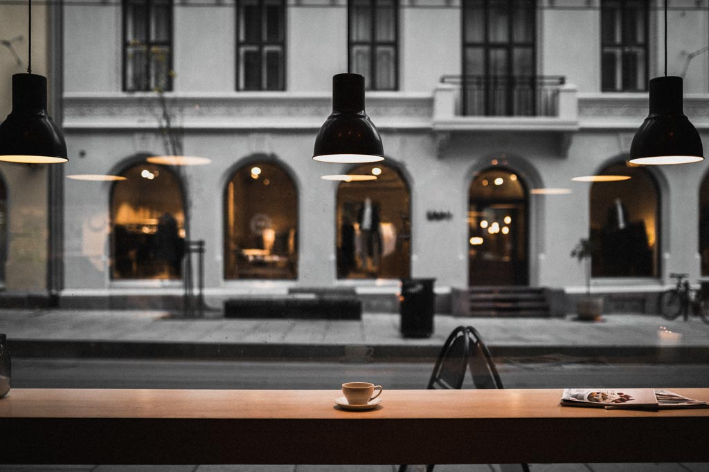
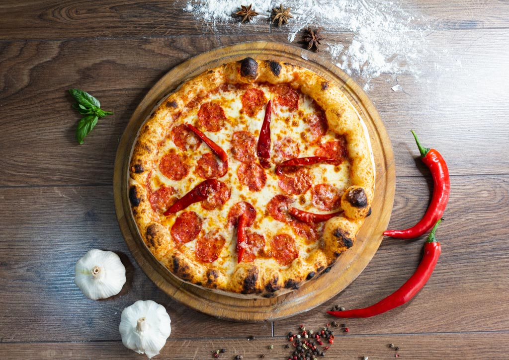

Cafe OKUDAの新しいランチメニューが登場！
この度、Cafe OKUDAでは新しいランチメニューの提供を開始いたしました。こだわりの食材を使った、心温まる一皿をぜひお試しください。

この度、Cafe OKUDAでは新しいランチメニューの提供を開始いたしました。こだわりの食材を使った、心温まる一皿をぜひお試しください。

本場の味を再現した、OKUDA Coffeeの台湾ミルクティーの魅力。

期間限定で提供される、異国情緒あふれるラマダンプレートをご紹介。

おかげさまで、Cafe OKUDAは開業から一周年を迎えることができました。この一年間、多くのお客様に愛され続けてきたことを心より感謝申し上げます。記念キャンペーンも実施中です！

一杯のコーヒーに魂を込めるバリスタの技術。ハンドドリップで香りを最大限に引き出す秘訣を公開。

甘酸っぱいイチゴと濃厚なチーズの組み合わせが楽しめる、期間限定スイーツ。

コーヒーと相性抜群のチョコレート。それぞれの風味を引き立て合う、最高の組み合わせを見つけましょう。

リラックス効果抜群のハーブティー。種類ごとの効能と、美味しい淹れ方をご紹介します。

お客様に最高の時間を提供するため、細部にまでこだわった店内のデザインをご紹介します。

コーヒーとの相性を考え抜いた、OKUDA Coffee自慢のランチメニュー開発秘話。

暑い季節にぴったりの、OKUDA Coffee特製アイスドリンクをご紹介。爽やかな一杯でリフレッシュ！

とろーりチーズとハムが絶妙な、OKUDA Coffeeのグリルパニーニ。

外はサクサク、中はふわふわ。OKUDA Coffeeのベルギーワッフルが美味しい理由。

ランチタイムに人気のパスタメニュー。シェフが腕を振るう、こだわりの一皿をぜひ。

OKUDA Coffeeがコーヒーの味を追求する上で欠かせない、水へのこだわりをご紹介。

お客様に最高のコーヒー体験を届ける、OKUDA Coffeeのバリスタたちの素顔に迫ります。

忙しい朝でも、OKUDA Coffeeのエスプレッソで贅沢なひとときを。

優しい甘さと独特の風味が人気の黒糖ミルクティー。その秘密に迫ります。

手間暇かけたミートソースが自慢の、OKUDA Coffeeのボロネーゼ。

ふわふわの食感とキャラメルの香ばしさがたまらない、期間限定のスイーツ。

甘酸っぱいベリーとバニラの組み合わせが絶妙な、見た目も華やかなアイス。

ボリューム満点、スパイシーな特製カツカレーで午後の活力をチャージ。

OKUDA Coffeeは、大切な人との語らいの場としても最適です。

自然な甘さで、お子様から大人まで楽しめるOKUDA Coffeeのアップルジュース。

搾りたてのフルーツを使った、OKUDA Coffeeのフレッシュジュースで健康的にリフレッシュ。

なめらかな口どけと、バニラの香りが広がるOKUDA Coffeeの定番デザート。

フレッシュなトマトの酸味と甘みが食欲をそそる、季節限定パスタ。

OKUDA Coffeeで味わう、本場イタリアの味。ランチタイムにぜひ。

OKUDA Coffeeのバリスタたちが、日々の仕事にかける情熱をご紹介します。

豊富なフレーバーからお好みをどうぞ。食後の締めくくりにぴったりのデザート。
ついにCafe OKUDAがオープンいたしました！皆様のお越しを心よりお待ちしております。